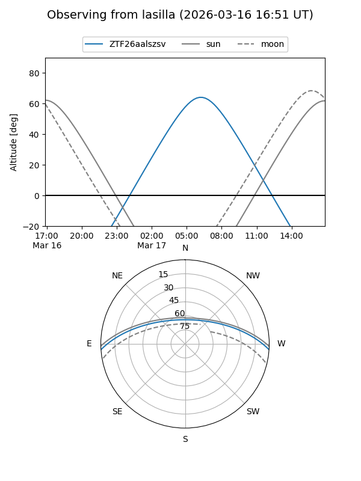
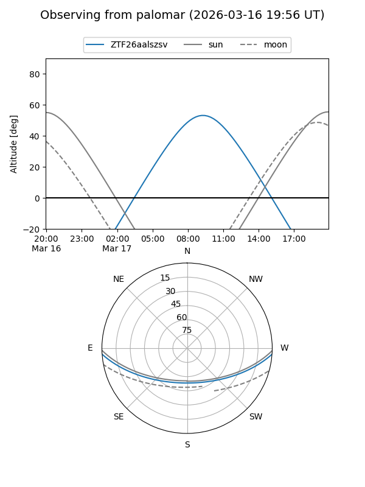

ZTF26aalszsv
Target ZTF26aalszsv at 2026-03-17 11:55
Aliases and brokers:
FINK: link
Lasair: link
ALeRCE: link
alt names
ZTF26aalszsv (ztf,fink_ztf)
Coordinates:
equatorial (ra, dec) = 196.9976,-3.26246
equatorial (HMS+DMS) = 13:07:59.43,-03:15:44.87
galactic (l, b) = (311.0557,+59.34794)
Flags:
Photometry:
last ztfg=19.60
1 ztfg detections
Lightcurve
Visibility


Additional plots